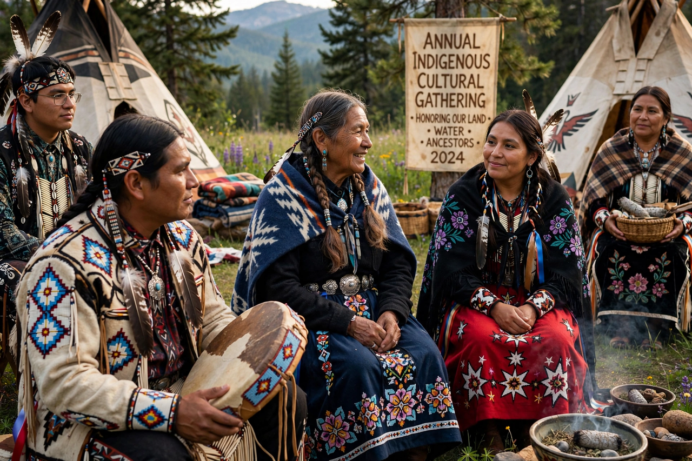

Indigenous peoples

Indigenous peoples are the original inhabitants of a region, whose cultures, languages and social systems developed over long periods prior to colonisation by outside settlers. There is no single universally accepted legal definition of the term; the United Nations and the International Labour Organization describe Indigenous peoples by criteria including historical continuity with pre-colonial societies, distinct social, economic and political systems, distinct languages and cultures, and self-identification.
Population and distribution
The United Nations estimates that there are more than 476 million Indigenous people worldwide, spread across some 90 countries and belonging to more than 5,000 distinct groups who speak over 4,000 languages. Indigenous peoples are found in nearly every inhabited region: the Sámi of northern Europe, the Ainu of Japan, the Maasai of East Africa, the Quechua and Aymara of the Andes, the many First Nations, Inuit and Métis peoples of Canada, Native American nations of the United States, Aboriginal and Torres Strait Islander peoples of Australia, and Māori of New Zealand, among many others.
History
From the fifteenth century onward, European colonisation profoundly disrupted Indigenous societies through dispossession of land, introduced diseases, warfare, forced assimilation and, in many places, policies that suppressed Indigenous languages and cultures. In Australia, policies of the nineteenth and twentieth centuries led to the Stolen Generations; in North America, residential and boarding schools sought to assimilate Indigenous children. The twentieth and twenty-first centuries have seen growing movements for land rights, treaty rights, language revitalisation and political self-determination.
Rights
Key international instruments include ILO Convention No. 169 (1989) and the United Nations Declaration on the Rights of Indigenous Peoples (UNDRIP), adopted by the UN General Assembly in 2007, which affirms rights to self-determination, lands and resources, culture, and free, prior and informed consent. Several states have enacted apologies, treaties and reconciliation processes — in Australia, the Closing the Gap framework addresses disparities between Indigenous and non-Indigenous Australians — though outcomes remain widely contested.
Culture and knowledge
Indigenous knowledge systems encompass deep ecological knowledge of local environments, oral traditions and cosmologies — such as the Dreaming of Aboriginal Australian cultures — and distinctive arts, governance traditions and spiritual practices. Protecting this heritage, including through repatriation of cultural property and revitalisation of endangered languages, is a central concern of Indigenous advocacy.